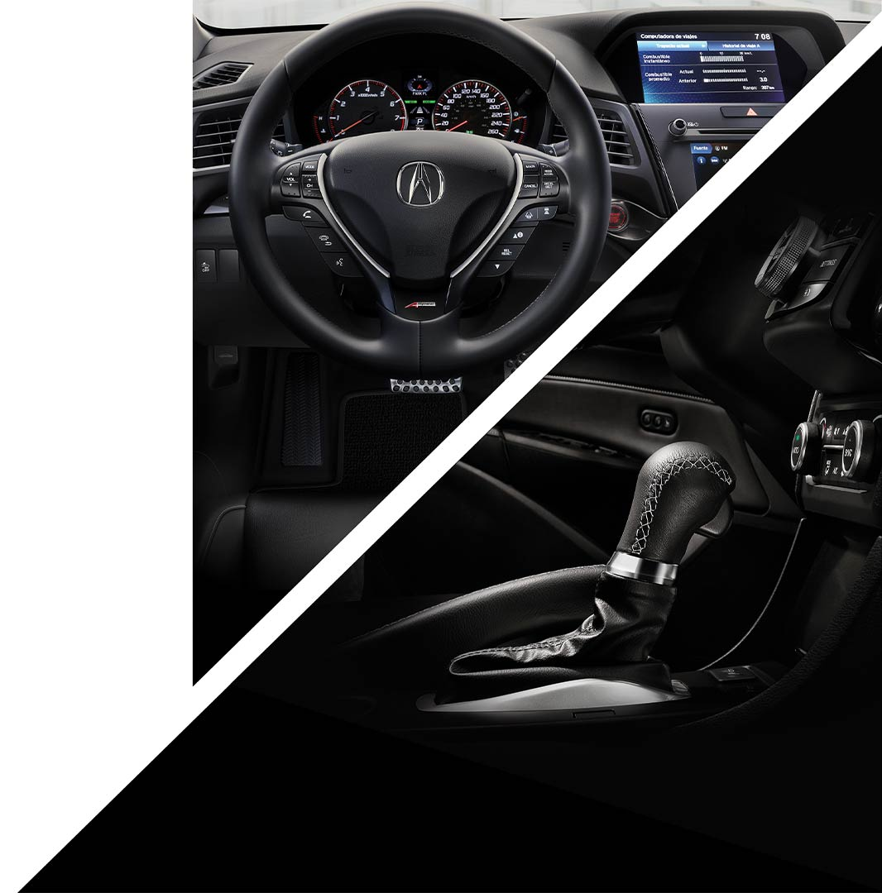

Lo más destacado del Nuevo Acura
El interior del nuevo ACURA® ILX es atractivo y sofisticado, equipado con lujo auténtico inspirado en ti, que sabes lo que quieres y lo consigues. La elegancia es tu sello y conquistas con un estilo único.
La versión A-SPEC provoca tu lado audaz gracias a sus interiores de piel con alcantara rojos y negros, techo en color negro, volante y pedales deportivos, decoraciones en negro metálico y luz ambiental roja.
El nuevo ACURA® ILX, además de ser un auto lujoso e imponente, fue creado para brindarte la mayor protección. El exclusivo sistema de alerta y asistencia al conductor AcuraWatch™ te acompaña en todo momento minimizando el riesgo de accidentes haciéndolo uno de los sedanes más seguros del segmento desde la primera versión.

Libera la potencia de ACURA® ILX y llega tan lejos como desees. Su motor de 2.4 litros DOHC i-VTEC genera 201 hp y un torque de 180 libras/pie para que domines las calles. Con transmisión de doble embrague DCT de 8 velocidades y control de cambios a través de los Paddle Shifters al volante, darás rienda suelta a tu instinto deportivo.